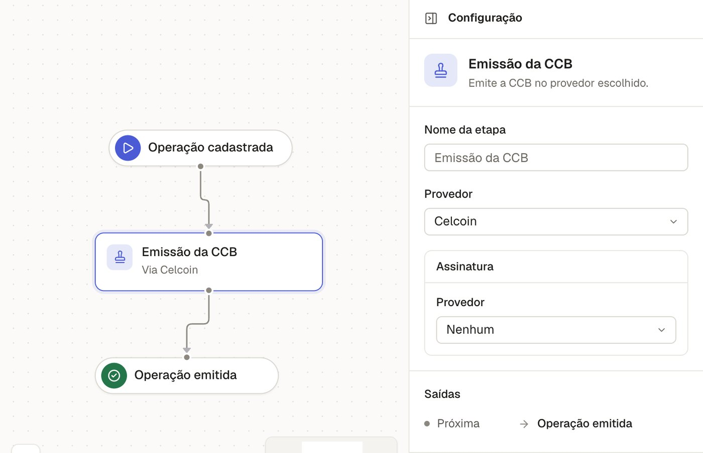

André FellinCEO
Fundou a Flow e liderou a unidade de crédito da Celcoin.
O credor mantém a política de crédito, a licença, a marca e a carteira.
Ilustração de uma esteira de crédito.

Assistente de fluxoNo arEm breve
Consignado privado, do leilão da Carteira de Trabalho Digital à cessão ao fundo.
Para parceiros de BaaSOs clientes da fila no ar mais rápido, com a esteira operada pela TwinFinance.
Agende uma conversaO caso de uso e as regras de cada produto.
A esteira configurada e integrada aos fornecedores do credor.
A virada de chave. Depois, os Twins seguem operando.
Fundou a Flow e liderou a unidade de crédito da Celcoin.
Cofundou a Flow e desenhou seu sistema de crédito como serviço.
Fundou a Networkme e liderou a operação em 3 países.
Envie seus dados e o time da TwinFinance entra em contato para entender a sua operação.
Agende uma conversa